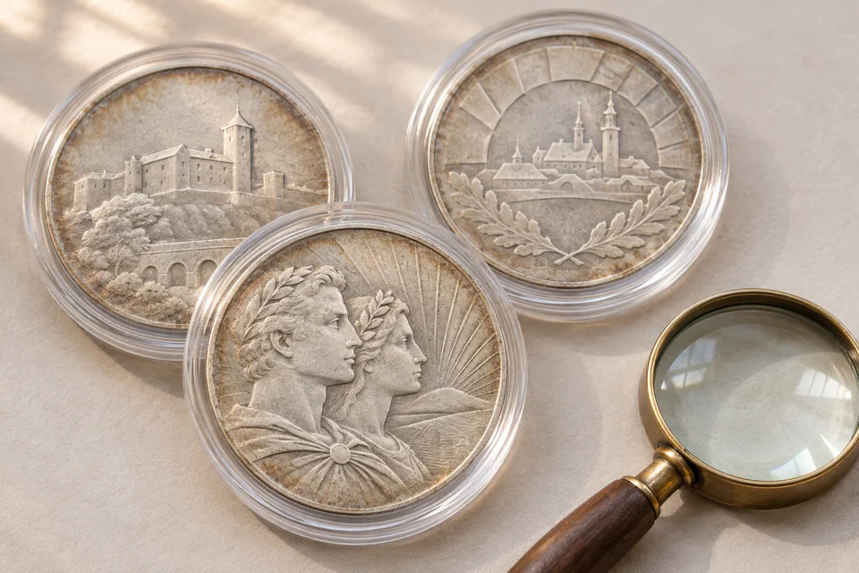

Ilustracja poglądowa wygenerowana AI; krążki nie przedstawiają konkretnej emisji monety.
Monety z okresu PRL to szeroka grupa: zwykłe monety obiegowe, emisje okolicznościowe i wyroby kolekcjonerskie. Nie każda moneta z napisem „Polska Rzeczpospolita Ludowa” jest srebrna. Kolor, wysoki nominał i wiek nie wystarczają do ustalenia materiału, a cena kolekcjonerska nie musi odpowiadać wartości kruszcu.
Przed sprzedażą warto ustalić dokładną emisję, rok i wariant. Skup srebra w Gorzowie może służyć jako punkt odniesienia dla zawartości metalu, ale ciekawa moneta wymaga czasem szerszej oceny numizmatycznej. Nie traktuj rodzinnego zbioru jak jednorodnego worka srebra bez wcześniejszego rozpoznania.
Monety obiegowe nie są automatycznie srebrne
Wiele monet używanych w codziennym obiegu PRL wykonano z metali nieszlachetnych, między innymi aluminium, miedzioniklu i innych stopów. Wygląd podobny do srebra nie zmienia ich składu. Dotyczy to również dużych monet, które mogą sprawiać wrażenie wartościowego kruszcu wyłącznie ze względu na rozmiar.
Rok i nominał trzeba odczytywać razem z projektem oraz danymi katalogowymi. Ten sam ogólny temat, postać lub podobne godło może występować w różnych emisjach. Nie wpisuj masy wszystkich monet z pudełka do kalkulatora srebra 925: wynik nie ma sensu, jeśli materiał nie został potwierdzony.
Przykłady srebrnych emisji PRL
Na rynku numizmatycznym spotyka się między innymi srebrne 200 zł z 1974 roku „XXX lat PRL”, srebrne emisje 200 zł związane z igrzyskami olimpijskimi z 1976 roku oraz srebrne 1000 zł z Janem Pawłem II z 1982 roku. To przykłady do identyfikacji, nie pełny katalog ani informacja o dostępności w punkcie.
Nie przypisujemy całej grupie jednego parametru próby czy masy. Trzeba je sprawdzić dla konkretnej monety w katalogu emisji, najlepiej na podstawie danych emitenta. Przy nazwie handlowej mogą pojawiać się skróty, a na rynku bywają reprodukcje, medale i inne wyroby podobne do monet. Zwróć uwagę, czy przedmiot rzeczywiście ma nominał i odpowiada znanej emisji.
Wartość metalu i wartość kolekcjonerska
Dla potwierdzonego jednorodnego stopu zawartość srebra oblicza się jako masa monety × próba / 1000. Jeśli dane katalogowe podają już masę czystego srebra, nie należy ponownie zmniejszać jej o próbę. Rachunek wyznacza zawartość metalu, nie cenę konkretnego egzemplarza.
W numizmatyce znaczenie mają także nakład, wariant, stan zachowania, autentyczność oraz kompletność opakowania. Cena wystawiona w internecie nie jest dowodem rzeczywistej wartości transakcyjnej. Zwykła, uszkodzona moneta i świetnie zachowany egzemplarz o szczególnym wykończeniu mogą być oceniane inaczej mimo tej samej zawartości kruszcu.
Dlaczego nie czyścić rodzinnego zbioru?
Polerowanie, pasty i kąpiele mogą naruszyć powierzchnię i pozostawić ślady obniżające atrakcyjność dla kolekcjonera. Nie próbuj przywracać każdej monecie lustrzanego połysku. Naturalna patyna nie jest tym samym co zabrudzenie, które bez konsekwencji usuwa się z przedmiotu codziennego użytku.
Monety rozdziel do osobnych kapsli lub odpowiednich holderów. Zachowaj dokumenty, pudełka i wcześniejsze opisy, ale nie traktuj starej odręcznej etykiety jako pewnego potwierdzenia odmiany. Zrób zdjęcie awersu, rewersu i rantu, nie nanosząc żadnych znaków na samą monetę.
Jak przygotować listę do wyceny?
Dla każdej pozycji zapisz nominał, rok, temat emisji i liczbę sztuk. Dopisz widoczne uszkodzenia oraz posiadane opakowanie. Podziel monety rozpoznane jako srebrne od nierozpoznanych, zamiast zgadywać skład całego zbioru. Jeśli emisja wydaje się rzadka, rozważ ocenę specjalisty przed rozliczeniem na metal.
Skup srebra Gorzów — kontakt z punktem pozwala zapytać o sposób przedstawienia kolekcji. Skup srebra nie powinien być utożsamiany z automatycznym potwierdzeniem autentyczności na podstawie zdjęcia. Do wiarygodnej oceny potrzebny jest właściwy opis, a przy wątpliwościach także oględziny i dobrana do przedmiotu metoda sprawdzenia.
Sprawdź cennik odpowiedniej kategorii srebra albo zapytaj o aktualną ofertę i oględziny w punkcie.
Identyfikację polskiej emisji warto oprzeć na danych emitenta i katalogach numizmatycznych. Punktem wyjścia jest Narodowy Bank Polski; sam skrócony opis aukcji nie wystarcza do rozpoznania wariantu.